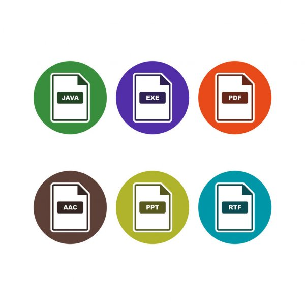

Формат файлу (або тип файлу) в інформатиці - це усталений стандарт запису інформації у
файлі даного типу. Спосіб кодування інформації або даних залежить від застосованої комп'ютерної програми. Часто формат
файлу визначається його розширенням. Різні формати файлів можуть різнитися ступенем деталізації, один формат може бути
«надбудовою» над іншим або використовувати елементи інших форматів.
Найбільш уживаними файлами, що зустрічаються при
користування комп'ютером є:
Архівні: ZIP, RAR;
Відео: AVI, SWF, Mpeg4(Mp4), Mpeg1-2(MPG);
Графіка: JPEG(JPG), BMP, GIF, TIFF(TIF), PSD;
Текст, документи, формати друкованого тексту: DOC, TXT, PDF, RTF;
Звукові: Mp3, WAV, WMA, MIDI;
Інші формати: EXE, HTM, HTML.